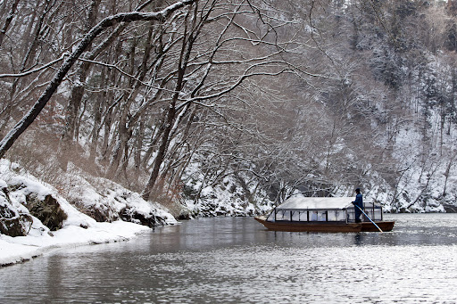
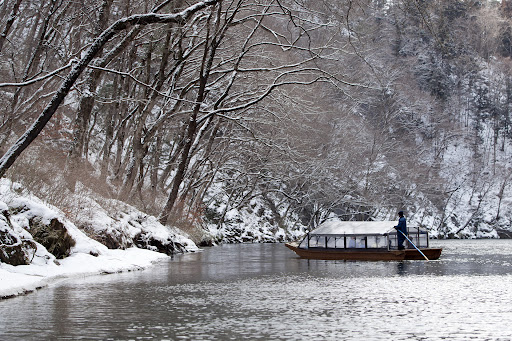

猊鼻渓
 

猊鼻渓は、国の史跡名勝天然記念物、名称指定県内第一号に指定され、
日本百景の一つに数えられています。高さ１００メートルの岸壁には
奇岩、滝などの迫力のある景色が広がっており、四季折々で変化する
景色を眺めながら舟下りを楽しむことができます。景色だけでなく、
茶席舟やこたつ舟などの季節限定イベントのほか、願掛けの穴に運玉
を投げ入れる運試しイベントもあります。
観光情報
所在地 : 岩手県一関市東山町長坂町467
電話番号 : 0191-47-2341
定休日 : 年中無休
営業時間 : 8時30分～15時
料金 :
大人 1800円,小学 900円
幼児(3歳以上) 200円
[アクセス経路]
ルート1： 一ノ関駅 → 【在来線30分】 猊鼻渓駅 → 【徒歩5分】 猊鼻渓
ルート2： 一関IC → 【車30分】 猊鼻渓